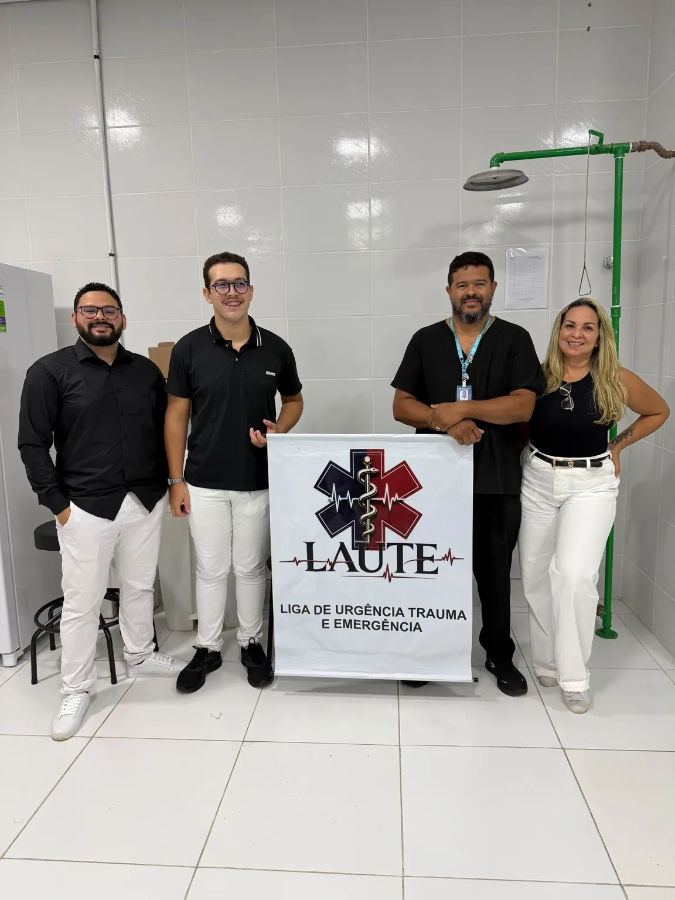

01 / ENSINO
Aprender e compartilhar.
Aprofundamos conhecimentos e desenvolvemos o raciocínio crítico por meio de aulas, debates, palestras, minicursos e workshops. A simulação oferece um espaço de treino e observação, sob orientação.
Nossos cursosA formação ganha força quando o conhecimento é compartilhado, a ciência é valorizada e o cuidado orienta o caminho.

Somos a LAUTE, vinculada à Faculdade Estácio, em São Luís, Maranhão. Uma entidade estudantil sem fins lucrativos, não religiosa e apolítica, gerenciada por acadêmicos de Enfermagem, sob supervisão docente.
Nosso espaço é o encontro entre a curiosidade acadêmica, a construção coletiva do conhecimento e o compromisso com a sociedade.
Buscamos aprofundar os estudos em urgência, trauma e emergência e contribuir para uma formação orientada pela ética, pela segurança e pela responsabilidade.
As atividades da liga têm finalidade acadêmica e de extensão. Não substituem a graduação, o registro profissional ou as competências previstas nas normas de cada profissão.
Ensino, pesquisa e extensão se encontram para ampliar repertórios e aproximar a formação das necessidades do cuidado.
Aprofundamos conhecimentos e desenvolvemos o raciocínio crítico por meio de aulas, debates, palestras, minicursos e workshops. A simulação oferece um espaço de treino e observação, sob orientação.
Nossos cursosEstimulamos a leitura crítica, a produção científica e a divulgação de conhecimentos em trabalhos e congressos. As evidências científicas ajudam a qualificar as perguntas e a fortalecer a formação em saúde.
Converse com a ligaAproximamos a formação acadêmica da comunidade por meio de ações educativas e de extensão. Valorizamos a escuta, a troca de saberes e o compromisso social na construção de experiências de aprendizagem.
Nossos registrosMais do que realizar atividades, queremos construir uma cultura de aprendizado com ética e compromisso. A supervisão docente e o respeito às normas institucionais fazem parte desse processo.

Faculdade Estácio · Turu
Avenida São Luís Rei de França, nº 19
São Luís, Maranhão
Acompanhe os comunicados oficiais e as oportunidades da LAUTE pelo Instagram. Processos seletivos e critérios de participação são informados em cada divulgação.
@liga.laute_